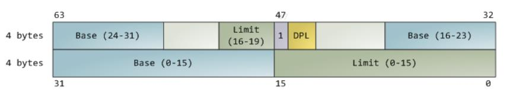
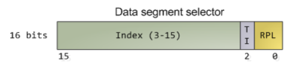
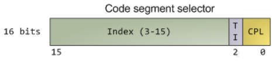

The Microprocessor and Its Architecture¶
约 11424 个字 27 行代码 47 张图片 预计阅读时间 40 分钟
对应考纲模块： 微处理器结构、寻址方式、实模式/保护模式/64位模式、多级分页细节
编程模型 (Programming Model)¶
8086 到 Core2 期间，寄存器分为“程序可见（program visible）”与“程序不可见（program invisible）”两类。
- 程序可见寄存器（program visible）
- 在编程时要用到，指令中可直接指定和操作。例如通用寄存器、段寄存器等，程序员写汇编时经常显式使用。
- 程序不可见寄存器（program invisible）
- 程序中无法直接访问，也不能用指令操作，应用程序编程时不可寻址。主要用于 CPU 内部管理（如段描述符的缓存等），提升执行效率。
A. GPRS¶
通用寄存器
| Register | Name | 常见用途说明（Commonly Used As） |
|---|---|---|
| A | Accumulator | 返回值寄存器，特别用于算术操作结果的累加。 |
| B | Base index | 数组或链表等结构的起始地址。 |
| C | Counter | 计数器，常用于循环实现，如 for(int i=0; i<9; i++) 里的i。 |
| D | Data | 累加器的扩展空间。（如IMUL 32位模式下配合EDX+EAX处理64位运算） |
| BP | Base Pointer | 指向当前栈帧的基地址（函数参数结束与局部变量起始之间的位置）。 |
| SP | Stack Pointer | 指向上一次PUSH到内存的末端字节。 |
| SI | Source Index | 数据流的起始地址，常用于字符串等不定长数据处理。 |
| DI | Destination Index | 数据流的结束地址，常用于切片或拷贝等操作的目标末端。 |
- 64位 (x64):
RAX, RBX, RCX, RDX, RSI, RDI, RBP, RSP -
新增的8个通用寄存器：
R8~R15 -
分级访问规则：
RAX(64-bit) →EAX(低32-bit) →AX(低16-bit) →AH(高8-bit) /AL(低8-bit) 在64位模式下，写入32位寄存器（如MOV EAX, 1）会自动将高32位清零（RAX 的高32位变0）。
Info

使用EAX进行ADD计算会比使用其它寄存器在编码上更短，有更高的code density ，更加cache-friendly
详细说明¶
-
RBX：可被访问为
RBX、EBX、BX、BH、BL。BX（基址寄存器，Base Index）常在所有版本微处理器中，用作内存地址的偏移量。
-
RCX：可作为
RCX、ECX、CX、CH、CL访问。- （计数寄存器 Count）是通用的计数器，同时也是很多指令操作次数或数据移动量的默认寄存器。
-
RDX：可作为
RDX、EDX、DX、DH、DL访问。- （数据寄存器 Data）常用于存放乘法指令结果的一部分，或除法指令的被除数高位。
- 例如 16位乘法，乘积的高位和低位分别存于
DX和AX。
-
RBP：可作为
RBP、EBP、BP访问。- （基址指针 Base Pointer）用于指向当前栈帧（stack frame）的基地址，常用于局部变量和参数的寻址。
-
RSI：可作为
RSI、ESI、SI访问。- （源变址 Source Index）在字符串操作指令中用作源数据地址，同时也是通用寄存器。
-
RDI：可作为
RDI、EDI、DI访问。- （目标变址 Destination Index）在字符串操作指令中用作目标数据地址。
Warning
BPL、SPL、SIL、DIL：这四个 8位低字节寄存器只在64位模式下可直接寻址。
- R8 ~ R15：仅在启用64位扩展（如 Pentium 4、Core2 及以后架构）时可用。
- 访问这些扩展通用寄存器的大部分指令需用 REX 前缀。
Summary
总的来说，64位模式下，通用寄存器分布如下：
- 16个 8位低字节寄存器：
AL、BL、CL、DL、SIL、DIL、BPL、SPL、R8B~R15B - 4个 8位高字节寄存器：
AH、BH、CH、DH（仅当未用 REX 前缀时可寻址） - 16个 16位寄存器：
AX、BX、CX、DX、DI、SI、BP、SP、R8W~R15W - 16个 32位寄存器：
EAX、EBX、ECX、EDX、EDI、ESI、EBP、ESP、R8D~R15D - 16个 64位寄存器：
RAX、RBX、RCX、RDX、RDI、RSI、RBP、RSP、R8~R15
Partial Modify
修改32位的部分寄存器会将高32位清零，修改16位和8位部分寄存器则不会，这是因为ah和al是可以被单独寻址的，而rax-eax的部分则不行。（笔者这里有个疑问，eax-ax的部分也不能单独寻址，为什么不清零）
Partial Register Stall
混合使用不同大小的寄存器（例如 EAX 和 AX）会导致CPU流水线卡顿。
现代 CPU 为了运行得更快，会使用一种叫乱序执行的技术。
如果 CPU 看到两条指令虽然用了同一个寄存器名字（比如 EAX），但实际上它们之间没有数据关联（你做你的，我做我的），CPU 会在内部把这个物理寄存器“重命名”为两个不同的临时空间。
这样，这两段代码就可以同时运行，不需要排队。
MOV EAX, [mem1]
IMUL EAX, 6 ; 第一组任务：使用 EAX
...
MOV EAX, [mem3] ; 第二组任务：重新给 EAX 赋值
ADD EAX, 2 ; 使用新的 EAX
CPU 看到第一组和第二组都用了 EAX，而且第二组开始是一个全新的 MOV（写入）。CPU 很聪明，它知道：“哦，这仅仅是名字冲突，实际上第二组不需要第一组的结果。”
CPU 对 EAX 进行重命名。第一组和第二组任务可以同时执行。
MOV EAX, [mem1]
IMUL EAX, 6 ; 第一组任务：使用 32位的 EAX
...
MOV AX, [mem3] ; 第二组任务：只写入 16位的 AX (EAX的低16位)
ADD AX, 2
第一组任务正在修改整个 EAX。第二组任务试图修改 AX（EAX 的一部分）。
Intel/AMD/VIA 的某些架构无法对“部分寄存器”（Partial Register，即 AX）进行重命名。
CPU 会感到困惑或为了保险起见，它认为：“你在修改 EAX 的一部分，那一会儿我读取 EAX 的时候，还需要保留高16位的数据吗？这两者之间可能有某种复杂的关系。”
- 结果：假依赖（False Dependence）。 CPU 无法并行处理。第二组指令必须强行等待（Stall）第一组指令完全做完，才能开始执行
MOV AX。这就大大降低了效率。
如果代码中先写了大寄存器（如 32位的 EAX），紧接着又写了它的子寄存器（如 16位的 AX 或 8位的 AL/AH），就会触发这个硬件限制。
- 尽量避免使用高8位寄存器（如 AH, BH, CH, DH）或混合尺寸操作，直接统一使用完整的 32位（或64位）寄存器操作，这样可以确保 CPU 能够通过寄存器重命名技术最大化并行效率。
Sepcial purpose registers¶
包括 RIP、RSP 和 RFLAGS。
- 段寄存器包括 CS、DS、ES、SS、FS 和 GS。
- RIP（指令指针）指向内存中下一条将要执行的指令。它用于标识某个代码段内的指令地址。
- RSP（堆栈指针）指向名为栈（stack）的内存区域。 通过该指针进行栈的数据存取。
B. 标志寄存器 (EFLAGS / RFLAGS)¶
- 除了基础的状态标志，需掌握控制标志和系统标志：
| 标志位 | 名称 | 作用说明 |
|---|---|---|
| CF(0) | Carry | 无符号运算进位/借位 |
| PF(2) | Parity | 低8位 1的个数为偶数时为1 |
| AF(4) | Auxiliary | Bit 3 向 Bit 4 的进位（BCD用） |
| ZF(6) | Zero | 运算结果为零时置1 |
| SF(7) | Sign | 运算结果为负(最高位为1)时置1 |
| TF(8) | Trap | 置1进入单步调试 |
| IF(9) | Interrupt | 1=允许响应可屏蔽中断 (INTR)，CLI清零，STI置位 |
| DF(10) | Direction | 串操作方向(0=增量，1=减量) |
| OF(11) | Overflow | 有符号溢出（如+127加1变-128） |
| IOPL | I/O Privilege | 特权级(0-3)，CPL≤IOPL时允许执行I/O指令 |
| NT(14) | Nested Task | 嵌套任务标志（中断返回 IRET 用） |
| VM(17) | Virtual 8086 | 置1进入虚拟8086模式 |
| AC(18) | Alignment | 对齐检查(Ring3下非对齐访问异常) |
BCD 码计算通过AF位来辅助计算
对于Example1，8+5=13(1101)，没有产生进位，计算完检查发现低四位大于9，加6调整(1 0011),对于example2，在计算时就产生了进位(1 0001)，此时AF已经被置为1，所以需要加6调整 ，变为（1 0111）
总的来说，在进行 BCD 加法后的修正时，判断是否需要“加 6 修正”只要满足以下两个条件中的任意一个，就需要对低四位加 6：
-
低四位的结果大于 9（即 A、B、C、D、E、F）。
-
AF = 1（即发生了半进位）。
段寄存器¶
-
CS（Code Segment，代码段）： 用于存放处理器正在执行的指令代码（即程序和过程）。
-
DS（Data Segment，数据段）： 主要用于存储大部分程序数据。一般通过偏移地址或其它寄存器（存有偏移地址）访问数据。
-
ES（Extra Segment，附加段）： 作为部分指令（如字符串操作）用的额外数据段，常用于存放目的数据。
-
SS（Stack Segment，堆栈段）： 定义了栈区的内存范围。 栈的具体位置由 SS（段寄存器）和 SP/RSP（栈指针寄存器）共同决定。
BP（基址指针）寄存器也可辅助在堆栈段内寻址数据。 -
FS 和 GS（补充段寄存器）： 从 80386 处理器开始引入，为程序提供两个额外的数据段。主要在操作系统和多线程环境下，用于特殊目的（如线程局部存储等，Windows 系统常用）。
64 位模式下的段寄存器变化¶
- 64 位模式下，仅保留 CS、FS 和 GS 三个段寄存器用于分段寻址。
- 软件可将 FS 和 GS 的“基址寄存器”作为地址计算基址（典型场景见线程局部变量）。
- 其它段寄存器（DS、ES、SS）在 64 位模式下默认基址为 0，也就是说，绝大多数情况下不起分段寻址的作用。
Modes of Operation¶

Long Mode（长模式）¶
Long mode（长模式），英特尔称为 IA-32e（"e" 代表 "extensions"），是在传统保护模式基础上的扩展。
- Long mode 包含两种子模式：64位模式 和 兼容模式（compatibility mode）
- 64位模式：支持所有 64 位架构的新特性和寄存器扩展。
- 兼容模式：用于向下兼容现有 16 位和 32 位应用，使其可以在 64 位操作系统下运行。
- Long mode 不再支持传统的实模式（real mode）和虚拟 8086 模式（virtual-8086 mode）。
Compatibility Mode（兼容模式）¶
- 兼容模式是长模式的第二种子模式，允许 64 位操作系统运行原有的 16 位、32 位 x86 应用程序。
- 这些传统程序可以在兼容模式下无需重新编译即可运行。
- 在兼容模式下运行的应用，会采用 32 位或 16 位寻址，只能访问前 4GB 虚拟地址空间。
- 兼容模式下，经典 x86 指令前缀能够在 16 位和 32 位地址、操作数大小之间切换。
Legacy Mode（传统模式）¶
- 传统模式包括三种子模式：
- 保护模式（Protected mode）：支持 16 位和 32 位程序的内存分段，可选分页及特权检查。运行于保护模式的程序可以访问最多 4GB 的内存空间。
- 虚拟 8086 模式（Virtual-8086 mode）：允许 16 位实模式程序作为受保护模式管理的任务运行。采用简单的内存分段，可选分页和有限的保护检查。程序最多可访问 1MB 的内存空间。
- 实模式（Real mode）：支持基于寄存器的 16 位内存分段。不支持分页或保护检查。运行于实模式的程序最多可访问 1MB 的内存空间。
System Management Mode（系统管理模式，SMM）¶
- 系统管理模式（SMM）是一种专为系统控制任务而设计的操作模式，这些任务通常对常规系统软件是透明的。
- 电源管理是 SMM 的常见应用场景之一。
- SMM 主要由平台固件和特定的底层设备驱动程序使用。
x86和x64和x86-64
| 术语 | 实际位数 | 别名/备注 | 内存限制 | 能运行谁的软件？ |
|---|---|---|---|---|
| x86 | 32 位 | IA-32, i386 | ~4 GB | 只能运行 32 位软件 |
| x86-64 | 64 位 | AMD64, Intel 64 | 海量 (TB级) | 既能运行 64 位，也能运行 32 位 |
| x64 | 64 位 | (同上，是上者的简称) | 海量 (TB级) | (同上) |
模式转换
-
起点：实模式 (Real Mode)
-
Reset：当在电脑上按下电源键或重启时，Reset 信号会将 CPU 强制重置到最底部的 Real Mode。
-
状态：此时 CPU 处于 16 位模式，就像 1978 年的 8086 芯片一样。它只能访问 1MB 内存，没有任何保护机制。这是 BIOS/UEFI 固件开始运行的地方。
-
一旦分页（Paging）开启，CPU 就正式进入了Long Mode。这是现代 64 位 Windows 10/11 或 Linux 运行的环境。
Long Mode 内部，有两个子状态：
- 64-bit Mode：运行原生 64 位程序。
- Compatibility Mode：运行 32 位老程序。
- 如何切换：依靠
CS.L(Code Segment Long bit)。 CS.L = 1：CPU 变身纯 64 位。CS.L = 0：CPU 模拟 32 位环境。- 这个切换非常快，是针对每个应用程序动态切换的。可以一边开着 64 位的 Photoshop，一边运行 32 位的微信，CPU 就在这两个圆圈间疯狂横跳。
Virtual 8086 Mode
- 在 Protected Mode 旁边。
- 开关：
EFLAGS.VM=1。 - 用途：这是一种在 32 位保护模式下模拟 16 位实模式的技术。它允许在 Windows 98/XP 的命令提示符（CMD）里运行古老的 DOS 游戏。
System Management Mode
- 入口：
SMI#(System Management Interrupt)。这是一个最高优先级的硬件中断。 - 出口：
RSM(Resume) 指令。 - 这是 CPU 的“后台模式”。当 CPU 进入这里时，操作系统完全不知情（被冻结）。通常用于硬件厂商的底层控制当 CPU 温度过高时，BIOS 强行降频。
总的来说电脑启动过程就是：
Reset 到 Real Mode。开启 PE 进 Protected Mode。开启 PG/LME 进 Long Mode。 然后在long mode里，根据运行的软件，灵活地在 64 位和兼容模式间切换。
Memory Management¶
Memory Management Requirements¶
-
1. 重定位（Relocation）
- 程序员在编写程序时，并不知道其在执行时会被放置在内存的哪个位置。
- 程序在运行过程中，可能被换入磁盘，再返回主内存的不同位置（即发生重定位）。
- 因此，程序中涉及内存访问的引用，必须在执行期间被动态转换为实际的物理内存地址。
- 程序不能直接访问物理地址，而是通过逻辑地址（Logical Address）间接访问物理地址。
-
2. 保护（Protection）
- 各进程不应在未获许可的情况下访问其他进程的内存空间。
- 由于在编译期无法检测所有的绝对地址，内存保护只能在运行时进行检查。
- 内存保护必须由处理器（硬件）来实现，而不是仅靠操作系统（软件）完成。
-
3. 共享（Sharing）
- 系统应该允许多个进程访问同一部分内存，实现内存共享。
- 让每个进程共享同一份程序代码，可以有效节省空间，而不用为每个进程都分配独立的副本。
Segmentation & Paging¶


Segmentation vs Paging: Key Differences
-
Size
- 分段（Segmentation）：段的大小不固定，由用户或编译器决定（逻辑上更贴合程序结构）。
- 分页（Paging）：页面和页框都是固定大小（如4KB），由硬件设定。
-
Fragmentation
- 分段：容易产生外部碎片（external fragmentation）。
-
分页：不存在外部碎片，但可能产生内部碎片（internal fragmentation）。
-
Table & Lookup
- 分段：段表（Segment Table）存储段号和段属性，查找速度较快。
- 分页：页表（Page Table）将虚拟页映射到物理帧，由于页数量众多，查找较慢，但可借助TLB（快表）加速。
分段更符合程序的逻辑结构（如代码段、数据段），而分页更利于内存管理和减少碎片。
Legacy-Mode Memory Management¶
Real Mode (实模式) 这是最早期的 8086 模式，没有内存保护。
-
输入：
- Selector (16位)：段寄存器的值。
- EA (16位)：偏移量 (Effective Address)。
-
Segmentation (分段)：采用经典的计算公式：
Selector * 16 + Offset。- Paging (分页)：无。
- 在实模式下，线性地址 = 物理地址。程序能直接控制物理内存，非常不安全。
Protected Mode (保护模式)
-
输入：
- Selector (16位)：段选择子（指向 GDT 表）。
- EA (32位)：32位的偏移量。
-
Segmentation (分段)：
- CPU 去查表（GDT），找到段基址，加上 EA。
- 生成一个完整的 32位 线性地址 (4GB 范围)。
-
Paging (分页)：有。
- 这是关键区别。32位线性地址不会直接发给内存条，而是必须经过分页单元 (Paging)。
- 分页单元通过查页表（Page Tables），将虚拟的线性地址映射到任意的物理页框上。
线性地址 不等于 物理地址。OS 可以利用分页实现虚拟内存（Swap）、内存隔离等高级功能。
Virtual-8086 Mode (虚拟8086模式)
它的目的是在现代保护模式的 OS（如 Windows）里模拟古代的 DOS 环境。
-
输入：
- Selector (16位) & EA (16位)：为了兼容老程序，输入看起来和实模式一样，都是 16 位的。
-
Segmentation (分段)：
- 伪装成实模式：它不查表，而是像实模式一样直接计算
Selector * 16 + Offset。 - 生成的线性地址被限制在 20位 (1MB) 以内，让 DOS 程序以为自己还在老机器上。
- 伪装成实模式：它不查表，而是像实模式一样直接计算
-
Paging (分页)：
- 虽然前面的分段在模拟老机器，但底层的分页机制依然是开启的。
- 这能让现代操作系统（OS）控制这 1MB 的空间。OS 可以通过分页，把这 1MB 的虚拟空间映射到物理内存的任何角落，或者同时运行多个 DOS 窗口而互不干扰。
-
逻辑上像实模式（1MB限制），物理上受保护模式管理（有分页）。
Summary
| 模式 | 地址计算 (分段) | 是否经过分页? | 最终物理地址 |
|---|---|---|---|
| 实模式 | 段*16 + 偏移 |
无 | 直接等于线性地址 |
| 保护模式 | 查表基址 + 偏移 |
有 | 由页表映射 |
| 虚拟8086 | 段*16 + 偏移 (模拟) |
有 | 由页表映射 (为了虚拟化) |
Long-Mode Memory Management¶

64-Bit Mode (纯 64 位模式)
这是 64 位程序运行时的状态。分段（Segmentation）消失了:
-
原因：在 64 位模式下，为了简化硬件设计和提高效率，Intel/AMD 强行规定实施 “平坦内存模型 (Flat Memory Model)”。CPU 强制把几乎所有的段基址（Segment Base）都设为 0。因此，程序眼中的逻辑地址（Effective Address）直接就等于线性地址（Linear Address）。
-
流程：
- 输入：直接是一个64位 虚拟地址。跳过分段，直接送入 Paging (分页) 单元。
- 输出：转换为 52位 的物理地址（Physical Address）。
Compatibility Mode (兼容模式)
这是在 64 位 Windows 上运行 32 位程序时的状态。也就是：假装自己是 32 位。它的上半部分看起来和上一张图里的“保护模式”一模一样。
- 流程：
- 输入：老式的 16位 Selector + 32位 Effective Address。
- Segmentation (分段)：有。为了兼容老程序，CPU 依然会执行分段计算（基址 + 偏移），生成一个 32位 的线性地址。
- 高位清零：32 位程序生成的地址只能位于 64 位地址空间的“最底部” 4GB 范围内。
- Paging (分页)：共用 64 位分页机制。
- 虽然程序以为自己在跑 32 位，但底层的分页机构是现代的（PAE 模式），所以操作系统依然可以用高级特性管理内存。
默认段寄存器与偏移寄存器¶
- 微处理器在访问内存时对于段的使用有一定的规则 —— 这些规则决定了段寄存器与偏移寄存器的组合方式。
- 代码段寄存器（CS）用于确定代码段的起始位置。
- 指令指针（IP/EIP/RIP）定位代码段中下一条将被执行的指令。
- 另一种默认组合是用于栈的访问。栈中的数据通过栈段寄存器（SS）与栈指针（SP/ESP）或基址指针（BP/EBP）对应的地址来引用。
- 下图展示了一个包含四个内存段的系统。如果某个段实际需要的空间不足64KB，不同的内存段可能会相互重叠或接触。你可以把“段”想像成可以在内存中任意移动的“窗口”，用以访问特定的数据或代码。一个程序可以拥有多于四个甚至六个段，但同一时刻只能访问其中四个或六个段。

relocation
段与偏移寻址方式支持重定位.可重定位程序（relocatable program）是指可以被放置在内存的任何位置，无需修改即可直接执行。可重定位数据（relocatable data）是指可以被放置在内存的任何位置，程序无需修改即可直接使用这些数据。
由于内存是通过段内的偏移地址来访问的，因此内存段可以在不改变任何偏移地址的前提下，移动到内存系统中的任意位置。
- 操作系统可以在运行时分配段的实际地址。
- Windows 程序通常假定前 2GB 的内存空间可用于代码和数据。
Address Wrapping problem
在早期的 Intel 8086/8088/80186 CPU 上，由于只有 20 根地址线，内存寻址空间最大只有 1MB（\(2^{20}\) = 1048576 字节）。如果段+偏移（seg:off）的线性地址超出了 1MB，就会自动回绕（wrap-around）到 0 位置。
这种“地址回绕”现象，也被称为“1MB Wrap-around”或“address wrap-around”。而从 80286（有 24 位地址线）及之后的 CPU，这一行为被取消。
例如：
| 逻辑地址 | 线性地址 | 物理地址 |
|---|---|---|
| 0xFFFF:0xFFFF | 0x10FFEF | 0x0FFEF |
| 0xF800:0x8000 | 0x100000 | 0x00000 |
上表中，当线性地址大于 20 位最大值（0xFFFFF）时，高位会被丢弃（wrap around），回到 0 开始。
很多早期的商业软件和系统（如 DOS、BIOS）都依赖了回绕行为，例如通过溢出“直接跳转”到 0:xxxx 段实现功能。升级到更现代的 CPU（无 wrap-around）时，这些老程序可能会失效。
Segmentation¶
Selectors and Descriptors¶
保护模式下段寄存器中存放的不是直接的段地址，而是一个选择子（selector），它用于从描述符表中选取一个描述符（descriptor）。描述符记录了内存段的位置、长度和访问权限等信息。

Selector（选择子）存放在段寄存器中，用于在描述符表中定位相应的描述符。描述符中记录了内存段的基址、界限和访问权限等信息。选择子可用于从两个描述符表（GDT或LDT）中的8192个描述符中选择其中之一。
描述符（Descriptor）为处理器提供了有关内存段的信息，如该段的位置、大小以及权限级别等。
有一种特殊类型的描述符，称为“门（Gate）”，它用于为某个软件例程提供代码选择子和入口地址。
Descriptor Tables¶
描述符表（Descriptor tables）用于存放各种描述符（Descriptor）：
- 全局描述符表（GDT, Global Descriptor Table）：保存可供所有程序访问的描述符（必需）。
- 局部描述符表（LDT, Local Descriptor Table）：仅保存某个特定程序所用的描述符（可选）。
- 中断描述符表（IDT, Interrupt Descriptor Table）：只保存门描述符（Gate Descriptor）（必需）。
全局与局部描述符¶
- 全局描述符中包含适用于所有程序的段定义信息。
- 局部描述符通常针对每个应用程序独有。
- 有时全局描述符也称为系统描述符，局部描述符称为应用描述符。
- 全局描述符是必须的，而局部描述符则是可选的。
Null Descriptor（空描述符）¶
- 全局描述符表（GDT）的第一个条目为“空描述符”（null descriptor），其全部内容为0，且不能用于访问内存。
- 空描述符主要用于废弃（失效）未被使用的段寄存器。通过将未用的段寄存器初始化为空选择子（null selector），软件就可以捕获对这些未用段的非法访问。
- 将空描述符加载到数据段寄存器（DS、ES、FS、GS）时不会产生异常，但如果用其访问内存则一定引发通用保护异常（#GP）。
Null Descriptor 使用示例
以下示例展示了如何使用空描述符来废弃未使用的段寄存器：
; 假设 GDT 的第一个条目（索引 0）是空描述符
; 空选择子的值为 0（TI=0, RPL=0, Index=0）
; 1. 将空选择子加载到 ES 寄存器（不会产生异常）
MOV AX, 0 ; 空选择子 = 0
MOV ES, AX ; 加载空选择子到 ES，不会触发异常
; 2. 尝试使用空描述符访问内存（会触发 #GP 异常）
MOV AL, ES:[0x1000] ; 通用保护异常（#GP）
; 因为 ES 指向空描述符，CPU 检测到非法内存访问
; 3. 正确做法：先加载有效的段选择子
MOV AX, 0x08 ; 假设这是有效的数据段选择子（索引 1，RPL=0）
MOV ES, AX ; 加载有效选择子
MOV AL, ES:[0x1000] ; 正常访问，不会触发异常
在这个例子中： - 空选择子（值为 0）可以安全地加载到段寄存器中，用于"清空"或废弃该段寄存器。 - 一旦尝试使用空描述符进行内存访问，CPU 会立即检测到并触发通用保护异常（#GP），从而防止非法访问。
- 在64位模式下，空选择子还可用作指示存在嵌套中断处理程序或特权软件的标志。
描述符的结构及表容量¶
- 下图展示了从80286到Core2处理器的描述符格式。

- 每个描述符占8字节（8 bytes）。
- 全局描述符表（GDT）和局部描述符表（LDT）最大长度为64KB。
- GDT 和 LDT 最多可容纳 8192 个条目。
各个字段的含义
描述符的基址（Base Address）
- 基址用于指示该段在内存中的起始位置。
- 在保护模式下，段的起始地址不再需要对齐到传统的段落（paragraph）边界，段可以从任意物理地址开始。
段限长字段（Segment Limit Field）
- 段限长表示该段允许访问的最大偏移量，即段内最后一个有效字节的偏移。
- 描述符中包含两个部分用于表示段限长：低16位和高4位，共组成20位的段限长。
- 限长字段的实际意义受到**粒度位（Granularity, G）**的影响，G位决定了段限长的单位。
粒度位（G，Granularity）
- G位决定段限长的计量方式。
- G=0 时，段限长单位为字节（byte）。
- G=1 时，段限长单位为4KB（4096字节）。
- 段的最大长度：
- G=0 时，最大段长度为 (limit + 1) 字节，范围为 0 至 0xFFFFF（1MB - 1）。
- G=1 时，最大段长度为 (limit + 1) × 4KB，范围为 0xFFF（4KB - 1）到 0xFFFFFFFF（4GB - 1）。
- 这里加1是因为段限长是表示最后一个有效字节的偏移量。
段限长的作用
- 如果访问的偏移量超出了段限长，处理器将产生通用保护异常（#GP）以防止非法内存访问。
Problem
Problem1: In protected mode, how many processes can theoretically run on a single x86 core?
- 在保护模式下，x86 使用描述符（即 GDT 和 LDT 中的表项）来管理对内存段的访问。
- 每个进程至少需要一个代码段和一个数据段，也就是需要两个 GDT 表项。
- GDT 总容量为 64K 字节，每个描述符占 8 字节。
- 64K ÷ 8 ÷ 2 = 4K = 最多支持 4096 个进程
Problem2: Given a segment descriptor with the following attributes:
- Base address: 10000000H
- Limit: 001FFH
- Granularity (G): 0 (limit is in bytes)
Calculate the starting and ending addresses of this segment:
- Starting address: 10000000H
- Ending address: 10000000H + 001FFH = 100001FFH
粒度为字节，直接加上即可
Problem3: For a descriptor with a base address of 10000000H, a limit of 001FFH, and G=1, what is the starting and ending locations?
- If G = 1, ending = starting + (segment size-1), where the segment size = (limit+1) x 4K bytes
- (limit+1) x 4K – 1 = (limit)000H + (4K – 1) = (limit)FFF H
- Limit is appended with FFFH to determine the ending address, namely ending = starting + (limit)FFF H
- For Problem 3 (limit = 001FFH, G = 1):
- starting location: 10000000H
- ending location: 10000000H + 001FFFFFH= 101FFFFFH
Note
Problem 3 实际上推导了一个公式，当G=1时，段结束地址 = 段起始地址 + (段限长)FFF H
Access Rights¶
访问权限字节（Access Rights Byte）用于控制对保护模式下段的访问。

- 它描述了该段在系统中的功能，并允许对该段进行完全的访问控制。
- 如果该段为数据段，还可以指定其增长方向。
- 如果段的访问超出了设定的段限长，操作系统将会被中断，并产生通用保护异常（General Protection Fault）。
-
可以指定数据段是否允许写入，或是为只读保护段。
-
S 和 Type 字段共同决定描述符的类型及其访问属性。
- S = 0 表示系统段，S = 1 表示代码段或数据段。
- DPL 字段表示段的描述符特权级，数值越小权限越高。0 表示最高权限，3 表示最低权限。
通过selector访问段

执行指令 MOV [BX], AX: 将寄存器 AX 中的数据移动到内存地址 [BX] 指向的位置。
* 在 x86 架构中，访问数据通常默认使用 DS (Data Segment, 数据段寄存器)
-
DS (Selector): 在保护模式下，段寄存器（如 DS）中存储的不再是实际的内存段地址（实模式下是这样），而是一个选择子。CPU 使用 DS 中的“选择子”去查找后续的信息。
-
程序执行指令，需要访问数据段（DS）。
- CPU 读取 DS 寄存器，拿到段选择子。
- CPU 根据选择子，在描述符表中找到对应的描述符。
- CPU 读取描述符中的 Base (基址)。
- 这个 Base + 偏移量 (指令中的
BX) = 实际的线性地址。 - 数据被写入到右侧线性地址空间对应的 Segment 区域中。
Selector¶

描述符是通过段选择子从描述符表中选取的。
- 段选择子包括一个13位的索引字段(\(2^{13}=8192\))、一个表指示位（TI），以及一个请求特权级字段（RPL）。
- TI位用于选择全局描述符表（GDT）或本地描述符表（LDT）。
- 请求特权级（RPL）用于指定访问内存段时请求的特权级。
Three types of privilege levels
- Descriptor Privilege Level (DPL): 由操作系统分配给每个段，表示该段的权限级别。在描述符中指定。

- Requestor Privilege Level (RPL): 位于段选择子的最低2位，用于表示请求该段的程序的权限级别（通常由创建选择子的代码决定）。在段选择子中指定。

- Current Privilege Level (CPL): 当前CPU的权限级别，等于CS寄存器中隐含的2位字段，由CPU自动维护。在Code Segment Selector 中指定。

在进行访问时，首先根据取\(Max(CPL,RPL)\)，得到当前访问级别，然后根据该级别与DPL进行比较，如果\(DPL \geqslant Max(CPL,RPL)\)，则可以访问该段，否则不能访问该段。
Example

- 当前有效权限级别为3，低于DPL级别2，不可以访问该段。

- 当前有效权限级别为0，高于DPL级别2，可以访问该段。
访问数据段时，只要权限够高就可以访问，但是访问栈段必须严格相等

- 级别相等，可以访问该段。

- CPL和RPL不相等，拒绝访问
Program-Invisible Registers¶
- 三种描述符表：GDT（全局描述符表）、LDT（局部描述符表）、IDT（中断描述符表）
- 四种程序不可见的寄存器（Program-Invisible Registers）：GDTR 和 IDTR：保存 GDT 和 IDT 的地址；在进入保护模式前加载。LDTR 和 TR：引用 GDT 中的特殊系统描述符（例如，LDTR 用作指向 GDT 的选择子）。其他不可见寄存器：作为描述符缓存使用。
- GDTR（全局描述符表寄存器）和 IDTR（中断描述符表寄存器）包含描述符表的基址和界限。当需要进入保护模式时，会将全局描述符表的地址和界限加载到 GDTR 中。
- 局部描述符表的位置由全局描述符表中的条目指定。GDT 中的某个描述符被设置为指向 LDT。
- 访问局部描述符表时，需要将 LDTR（局部描述符表寄存器）加载为一个选择子。该选择子用于访问 GDT，并将 LDT 的地址、界限和访问权限信息加载到 LDTR 的缓存部分。
- TR（任务寄存器）保存一个选择子，用于访问定义任务的描述符。任务通常是一个过程或应用程序。这样允许多任务系统能够简单、有序地切换到另一个任务。

这张图展示了在保护模式下，从logical address到linear address的转换过程。首先根据TI位选择GDT或LDT，然后根据索引字段选择对应的条目，这里×8是因为一个描述符占8字节。然后根据Base和offset相加得到linear address
更详细地说，当读取DS寄存器得到selector时，通过TI来判断是全局描述符表还是局部描述符表：
-
TI=0，选择GDT，从GDTR中读取GDT的地址，然后根据索引字段选择对应的条目
-
TI=1，选择LDT，读取LDTR和GDTR，此时LDTR被作为选择子，指向GDT中的一个描述符，该描述符存储了LDT的地址，然后根据索引字段选择对应的条目
切换任务时，LDTR的值会被改变，这就实现了任务空间的扩展，通过GDT来管理LDT，不同的任务，LDTR的值不同，从而实现任务的切换。
保护模式下的分段内存模型
- 系统软件可以利用分段机制来实现两种基本的内存分段模型：多段模型（multi-segmented model）和平坦内存模型（flat-memory model）。
- 多段模型将内存划分为不同的段，如代码段、数据段和栈段。每个段都可以独立访问。
- 平坦内存模型则是一种线性寻址模式。代码、数据和栈都被包含在单一的、连续的地址空间中，CPU可以直接访问全部可用的内存位置。

Paging¶
区分不同的地址
有效地址（Effective Addresses）
- 有效地址（也称为近指针，near pointers）：指的是某个内存段内的偏移量。
- 有效地址的计算公式为：
- 基址（Base）：存储在寄存器中的数值。
- 缩放系数（Scale）：可取值为 1、2、4 或 8。
- 索引（Index）：存储在寄存器中的数值。
- 位移量（Displacement）：指令编码中直接给出的数值。
逻辑地址（Logical Addresses）
- 逻辑地址（也称为远指针，far pointers）：指的是在分段地址空间中的一个引用。它由段选择子和有效地址构成。
- 逻辑地址的表示形式为：
线性地址（Linear Addresses）
- 线性地址（也称为虚拟地址，virtual addresses）：通过段基址和有效地址（段内偏移）相加得到。
- 线性地址的表示公式为：
- 当采用平坦内存模型（如 64 位模式）时，段基址被视为 0，此时线性地址即等于有效地址。
物理地址（Physical Addresses）
- 物理地址：CPU 在总线上访问的内存称为物理内存。
- 物理内存被组织为一串 8 位字节。每个字节都有唯一的物理地址。
- 内存分页机制允许任意物理内存位置被分配给任意的线性地址。
Multiple-Level Paging¶

使用多级页表可以节省空间的原理在于，不需要为所有线性地址都分配一个页表项，而是可以根据需要分配。而不是说分级可以节省空间，相反，如果每一级页表都满了，反而需要的空间比单级页表还要大。
多级分页的优缺点
- 优点：适合内存空间利用稀疏的应用程序。
- 单级分页：必须为每一个虚拟地址都分配一个页表项（数量巨大）。
- 多级分页：只需要为实际使用到的页目录项分配空间（总体页表项更少）。
- 缺点：多级分页会增加访问内存的时间开销。每次分页查找时需要多一次或多次访问内存才能完成页面表的遍历。
Example
某系统采用多级分页机制，页面大小为 4KB，物理内存为 16TB，虚拟地址长度为 32 位，页表项（PTE）大小为 4 字节。
需要多少级页表？画出虚拟地址和物理地址的划分。
- 虚拟地址：32 位
- 物理地址：44 位（16 TB = \(2^{44}\) 字节）
- 页面大小：4 KB (\(2^{12}\) 字节)
-
页表项大小：4 字节
-
页内偏移：4KB = \(2^{12}\) 字节 \(\Rightarrow\) 偏移用 12 位
- 每页页表可容纳 \(4\text{KB} \div 4\text{B} = 1024 = 2^{10}\) 个页表项
- 虚拟页号位数：32 - 12 = 20 位（这 20 位用于查页表）
- 每级页表用 10 位索引 \(\Rightarrow\) 总页表级数为 \(20\div10=2\)
- 需 2 级页表
地址划分示意：

- 需要 2 级页表
- 虚拟地址格式：\([10|10|12]\)
why 4KB page size?
影响分页大小的因素有： - 以2的幂为页大小：有利于硬件实现与性能提升 - 较小的页大小：内部碎片更少，有助于性能提升（比如写时复制 copy-on-write） - 较大的页大小：页表数量更少，缺页异常更少，TLB未命中次数减少 - 实践和理论均表明，页大小在\(2^7\)\(2^{14}\)（128B16KB）区间表现最优。 - Intel 很可能在上世纪80年代（80386时代）发现4KB页大小对当时主流应用具有最佳平均性能。
Page Protection¶
页保护检查（Page-Protection Checks）
- 当虚拟地址被转换为物理地址时，处理器会执行访问保护检查。
- 处理器会检查页面级的保护位，以判断当前访问是否合法。
- 如果违反了页级保护规则，则会触发**页错误异常**（page-fault exception）。

对于同一页，其页目录项（PDE，Page-Directory Entry）和页表项（PTE，Page-Table Entry）中的保护属性可能不同。 处理器会对页目录项和页表项中的保护位做“按位与”运算，得到最终的物理页保护属性。
Paging Registers¶
分页单元由微处理器的控制寄存器内容来控制。从奔腾（Pentium）处理器开始，新增了名为 CR4 的控制寄存器，用于扩展基本架构的功能。有关控制寄存器 CR0 到 CR4 的内容，请参见下图。

| 寄存器 | 名称 | 作用 |
|---|---|---|
| CR0 | Control Register 0 | 模式开关 (保护模式 PE、分页 PG) |
| CR1 | Reserved | 保留 |
| CR2 | Page Fault Linear Address | 存放出错地址 (发生页错误时) |
| CR3 | Page Directory Base | 页目录基址 (指向页表结构根部) |
| CR4 | Control Register 4 | 高级特性开关 (PAE, PSE 等) |
- 每当发生页错误异常（page-fault exception）时，CPU 会将产生该异常的线性地址（linear address）保存到 CR2 寄存器中。
-
页错误处理程序（page-fault handler）可以使用这个地址定位对应的页目录和页表项。
-
#PF（Page Fault）异常在内存访问时，可能在以下情况发生：
- 用于地址转换的页表项或物理页没有在内存中（即 present/absent）。
- 内存访问未通过分页保护检查（如用户/特权级、读/写权限等）。
-
如果在处理一个页错误时又发生了新的页错误，后一个页错误对应的线性地址会覆盖 CR2 中原有的地址（即 CR2 只保存最近一次异常的地址）。
-
对于32位线性地址，有两种地址转换模型：
- 两级分页：10-10-12 模型
- 三级分页：2-9-9-12 模型
Extensions of Paging Model¶
分页模型的扩展
分页模型有两个主要扩展： - 页面大小扩展（PSE，Page Size Extensions）：允许将线性地址映射为 4MB 大小的物理页。 - 物理地址扩展（PAE，Physical Address Extensions）：支持访问超过 4GB 的物理地址空间（采用 2-9-9-12 分段模型）。
启用页面大小扩展（PSE）
- 是否启用 PSE 取决于 CR4 控制寄存器中的 PSE 位和页目录项（PDE）的 PS 标志位（第7位）：
- 当 CR4.PSE = 1 且 PDE.PS = 1 时，该 PDE 直接映射 4MB 大小的页。
- 当 CR4.PSE = 1 且 PDE.PS = 0 时，PDE 仍然采用 4KB 页的映射方式。
Mixing 4KB and 4MB pages
4MB 物理页可以与标准的 4KB 物理页混合使用，也可以完全替代它们。 - 超大页（4MB）可用于内核代码。 - 常规页（4KB）适用于普通软件。

通过设置CR4.PSE，并利用页目录项中的一个标志位PS，CPU 可以灵活决定某一块内存是4KB还是4MB。
- 只有当操作系统把 CR4 寄存器的 PSE (Page Size Extension) 位设为 1 时，CPU 才会去检查页目录项里的 PS 位。否则，所有页面都默认是 4KB。
一切从 CR3 指向的页目录表 (Page Directory)开始。CPU 拿着线性地址的前 10 位找到一个页目录项 (PDE)。
此时，CPU 会检查这个 PDE 里的 PS (Page Size) 位：
-
如果 PDE.PS = 0：
- 表示这是普通的 4KB 页面。
- CPU 认为这个 PDE 指向的是一个二级页表 (Page Table)，于是它继续去查二级页表，最终找到 4KB 的物理页。
- 线性地址被拆分为 10位(目录) + 10位(页表) + 12位(偏移)。
-
如果 PDE.PS = 1：
- 表示这是一个 4MB 的大页面。
- CPU 认为这个 PDE 直接指向一个 4MB 的物理大页面的起始地址。不需要再去查二级页表了（少查一次表，速度更快）。
- 线性地址被拆分为 10位(目录) + 22位(偏移)。
PAE¶
物理地址扩展（PAE，Physical Address Extensions）
- PAE（页面地址扩展）允许32位应用程序访问超过4GB的物理内存空间。
- 当CR4寄存器的PAE位（CR4.PAE）被置为1时，PAE被启用。
- PAE特性：
- 允许最多访问64GB（2^36字节）的物理内存。
- 仅用于操作系统管理更多的物理内存，应用程序看到的线性地址空间仍然是32位。
- 支持4KB和2MB页面（不再支持4MB页面）。
PAE 允许虚拟地址被转换为最长达 36 位的物理地址。这是通过将分页数据结构中的每个表项从 4 字节扩展为 8 字节实现的，以便能够存放更长的物理页基地址。
PAE paging:2-9-9-12 model
在 2-9-9-12 模型中，内存分页采用了三级分页结构。
- 每个页表项扩展为 8 字节。
- 页目录和页表仍然保持每表4KB大小
- 其表项数量减半为512个
- 用9位（而非10位）进行索引
- 新增了一项：页目录指针表（PDPT，Page Directory Pointer Table）
- 用线性地址的 [31:30] 位进行索引
- 每个表项指向一个页目录
- CR3 寄存器保存页目录指针表的基地址(高20位是物理地址高位，低12位屏蔽即可)

可以得到2MB的大page

大页（2MB 或 4MB）的选择取决于 CR4.PSE 和 CR4.PAE 这两个位的取值，具体如下：
- 在启用 PAE 分页（CR4.PAE=1）时，PAE 会自动使用页大小位（PS），此时 CR4.PSE 的值被忽略，仅支持 2MB 的大页。
- 如果物理地址扩展被禁用（CR4.PAE=0）并且 CR4.PSE=1，则支持的最大物理页面为 4MB。
- 如果 CR4.PAE=0 且 CR4.PSE=0，则仅支持 4KB 页面。
MMU¶
内存管理单元（MMU, Memory Management Unit）是一种硬件单元，用于将虚拟地址转换为物理地址。
- 当发生 TLB 未命中（TLB miss）时，MMU 会通过硬件状态机遍历页表，实现地址转换。
TLB（Translation Lookaside Buffer）是MMU中的一个缓存，用于存储最近使用的页表项。
TLB的作用是加速虚拟地址到物理地址的转换；而 CPU Cache 是用于降低对主存的访问延迟。

Self-referencing Entries¶
在开启分页机制后，CPU 访问的每一个地址都是虚拟地址。 操作系统 (OS) 经常需要修改页表（例如：为新程序分配内存、处理缺页中断）。但是，页表本身存储在物理内存中。OS 只有虚拟地址，不能直接通过物理地址去写页表。如果不建立映射，OS 甚至无法“看到”或者“修改”页表本身。为了解决这个问题，OS 可以在页目录表 (Page Directory, PD) 中预留一项，让它指向自己。
- 正常情况：CR3->页目录 (PD)->页表 (PT)->物理页 (Data)。
- 我们在页目录 (PD) 中选一个特殊的索引（比如 0x300），让这个 PDE (页目录项) 指向 CR3 所在的物理地址，也就是指向 PD 自己。

这就创造了一个“回环”：
- 当 CPU 访问这个入口时，它以为自己在找下一级页表，但实际上它又回到了页目录。
举例来说，Windows 32位系统常用页目录的第 0x300 项作为自引用条目（self-referencing entry），该条目指向页目录自身。
给定一个虚拟地址 VA，可以通过如下方式快速获得该地址对应的 PDE（页目录项）和 PTE（页表项）所在的虚拟地址：
0xc0000000 的高10位是1100 0000 00 = 11 0000 0000 = 0x300
- GetPteVaAddress(va):
0xc0000000 | ((va >> 12) << 2)
右移十二位，此时低10位是pte的索引，然后左移二位，得到pte的虚拟地址
- GetPdeVaAddress(va):
0xc0300000 | ((va >> 22) << 2)
右移二十二位，此时低10位是pde的索引，然后左移二位，得到pde的虚拟地址
GetPte¶
假设我们要修改虚拟地址 0xe4321000 对应的映射关系（即修改它的 PTE）。我们需要构造一个特殊的虚拟地址来“找到”这个 PTE。
- 目标地址 (VA):
0xe4321000 - PD 索引 (Dir):
0x390 -
PT 索引 (Page):
0x321 -
构造的访问地址:
0xc0390c84
它的结构是这样拼出来的：
-
高 10 位 (PD Index) =
0x300，告诉 CPU，“第一跳”去查 PD 的第 768 项。因为该项指向 PD 自己，所以 CPU 还在 PD 里打转。CPU 此时会误以为 PD 就是个“页表”。 -
中 10 位 (PT Index) =
0x390，CPU 在“假装是页表”的 PD 里查找第0x390项。这一项原本指向的是目标的 页表 (PT)。于是，CPU 终于跳到了真正的目标页表上。 -
低 12 位 (Offset) =
0x321 * 4=0xC84，在目标页表中，找到第0x321个条目。这正是我们要找的 PTE
GetPde¶
一样的过程，只不过是回环两次
Total meltdown
Total Meltdown (CVE-2018-1038) 是微软为了修复原本的“熔断”（Meltdown）漏洞时，不慎引入的一个极其严重的软件补丁错误。
- 2018 年初，著名的 CPU 漏洞 Meltdown (熔断) 爆发，影响了全球绝大多数 Intel 处理器。微软紧急发布了补丁来修复 Windows 系统。
- 在为 Windows 7 (x64) 和 Windows Server 2008 R2 (x64) 发布的补丁中，微软犯了一个低级错误。补丁无意中将负责管理内存映射的关键表（PML4 表）的权限位从“仅内核访问（Supervisor）”设置成了“用户可访问（User）”。
它允许任何普通用户程序不仅能读取，还能写入系统的内核内存。这意味着攻击者可以随意篡改系统数据。
Mixing Segmentation and Paging¶
通过分段的方式得到线性地址，此时线性地址就是虚拟地址，然后通过分页的方式得到物理地址（x86的实现）
与os介绍的seg+paging区分
在这种做法中，通过分段来分离不同页表，段表中存的是页表的基地址，（理论上的实现，os 课程中介绍）